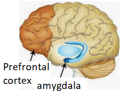

You’re probably wondering what this section has to do with DIY projects. Well, let me tell you. It has everything to do with it. Your mood depends on how well you communicate with your brain. Why? Because your brain makes the decisions, not you. The more negative your mood, the less you understand, leading to poor decisions. The more positive your mood, the better your understanding, leading to better decisions. You should be completely relaxed before you start any projects, or mistakes are bound to happen. To be successful at what you do, you have to enjoy it. When you have a positive attitude and you’re in a happy mood, you are capable of doing anything. So, if you can keep that consistent, you will have a rewarding life.
The truth is, for most of us, when we don’t have “control” over the outcome of a situation, we become angry and frustrated. When you become this way, you look ugly and incapable to everyone. The experts say breathing in and out will cool you down, but many of us forget to do this and our anger rages on. Why is this? Because they didn't explain the reason this technique works; they just say do this.
I will give you a simple explanation of how your "Prefrontal cortex" and the “Amygdala” communicate in your brain. The source from which your anger got started began in the brain. (If we didn't have a brain, we wouldn't be angry or happy. Right?). So let's start there. Then we will discuss the source (factors) of what ticked you off. To finally understand why breathing in and out calms you down.
We all know that when our emotions and our heart rate start to heat up, things get more difficult to deal with. Your heart rate goes up, your face may be turning red, and your breathing becomes more shallow. Let's see what’s happening in the brain.
Know Your Brain
Have a look at this picture. Let's focus on the "Prefrontal cortex". Why? Because the Prefrontal cortex helps you with your decision-making process; it communicates with other areas of the brain to help you process your thoughts. Sits behind the Prefrontal Cortex have something called the “Amygdala”. We have one on each side of the brain. It’s a detector ready to go off; the angrier you get, the more alert it becomes. Meaning it senses your negative emotions and your increased heart rate. As soon as your heart rate goes up, your face turns red, and your breathing becomes more shallow, you've just triggered your amygdala to go off, and it immediately shuts down the neural pathway between your prefrontal cortex, causing us to become disoriented, and our thoughts become unstable. When this detection happens, we call this an "amygdala hijack." Shutting down the neural pathway is an emergency response for the body to fight or flight (aka flee).
Once the pathway is shut down, it means the rest of the brain has no access to your cortex, and you will not be able to make any complex decisions, your attention span narrows, and you become trapped in one perspective that must make you feel safe. "I'm right, and everything else is wrong."
When the brain disconnects from the memory process, it’s not able to help us remember anything to calm us down. So your rage persists because there is no logic to your thinking. Your cortex is unable to reach the rest of the brain to make critical decisions. The only ability to cool yourself down is to quickly put your amygdala back to sleep. The only way to do that is to override the nervous system with conscious awareness.
Practicing these 2 techniques will help you stop the amygdala hijack to regain control of yourself.
- Focus on something physical to regain perspective.
- Use the 4-7-8 breathing technique for quick results, where you breathe in for 4 counts, hold for 7 counts, and exhale for 8.
The more you become relaxed, your amygdala will start to fall asleep, opening the pathway to your memory to help you make better decisions.